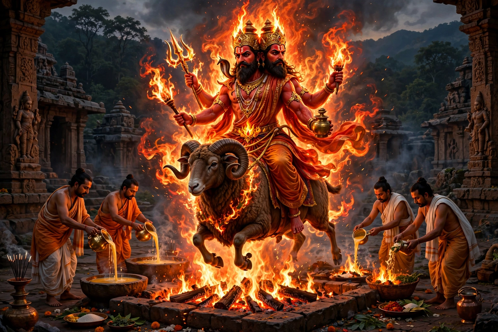

From Wikipedia, the free encyclopedia
| Agni | |
|---|---|
| Affiliation | Hinduism; god of fire and the sacrificial flame |
| Depicted as | Two-headed, red-skinned, riding a ram, flames from his mouths |
| Roles | Messenger between gods and men; mouth of the gods; witness of marriages and oaths |
| Rigvedic rank | Second only to Indra in hymns addressed to him |

Agni is the Hindu god of fire — the sacrificial flame, the hearth, the lightning and the sun's heat in one — and the mediator between gods and human beings, who carries every offering placed in the fire to its divine recipient. Second only to Indra in the number of Rigvedic hymns addressed to him (some two hundred), he is the priest among gods and the god among priests: no Vedic rite begins without him, the marriage vow is sworn before him, and the dead are given to his flames with the prayer that he carry them gently to the fathers.
Agni is born in three realms — as fire on earth, lightning in the air, and the sun in heaven — and kindled daily from the fire-drill, the "child of the two sticks", hidden and rediscovered like a thief in the waters. The myths delight in his hunger and his flight: cursed to devour all things, burned by Shiva's seed which he carried for a time, he hid in the waters and was betrayed by the frog and the elephant in turn. In the Mahabharata he burns the Khandava forest with Arjuna and Krishna's help, devouring its creatures despite Indra's rain, and gives Arjuna his great bow. His hunger is the engine of sacrifice itself: through Agni's mouth the gods eat.
Later Hinduism keeps Agni as guardian of the southeast and as the eternal witness — Agni sakshi, "with fire as witness", remains the formula of the Hindu wedding, and oaths, cremations and the domestic hearth keep him woven into daily religion even as temple worship centres on other gods. Buddhism carried him into East Asia as a minor guardian (Katen in Japan), and the modern chemistry of his name lives on in the Agni missiles of India's defence programme — a measure of fire's undiminished symbolism.
Hinduism · Indra · Kartikeya · Shiva · Hindu mythology